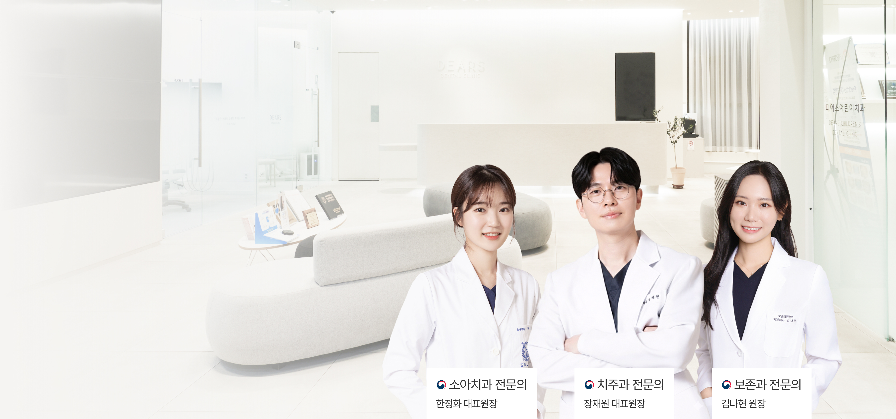
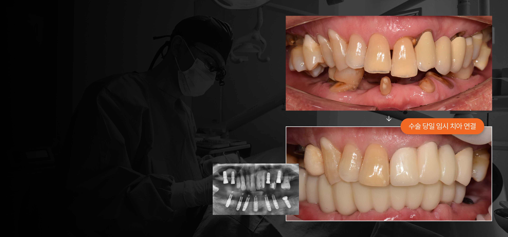
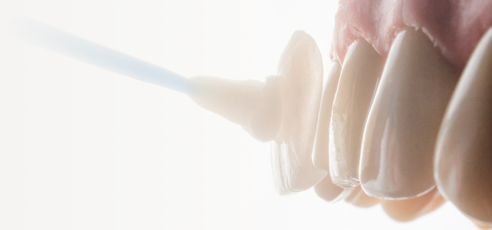
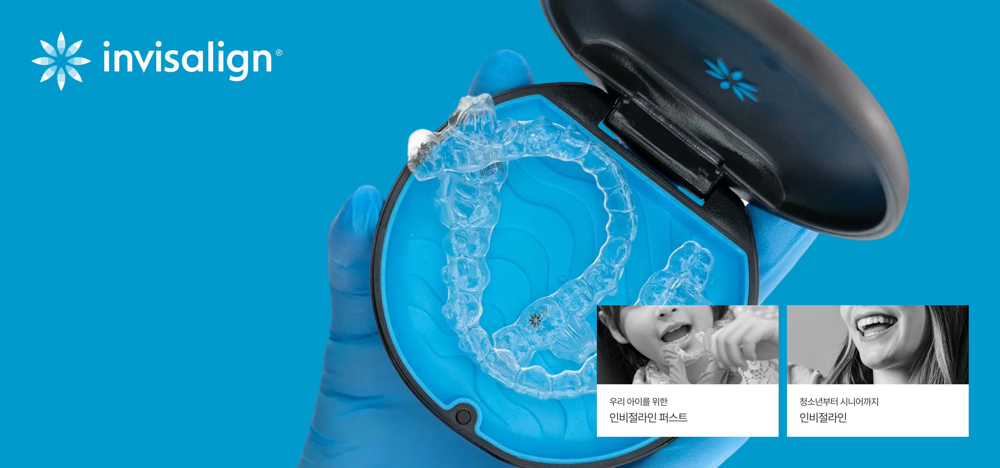

일요일 공휴일 진료
일요일 공휴일 진료
평일 야간 진료
분과별 전문의 협진
우리 아이의 첫 치료부터 어르신까지 온가족이 함께 다니는 치과.
디어스는 각 분야 전문의의 협진을 바탕으로
진심이 담긴 진료와 신뢰할 수 있는 결과를 약속드립니다.

원데이 임플란트
원데이 임플란트
임플란트 식립부터
당일 임시치아까지
접착제 없이 잇몸 염증을 최소화한
나사유지형 임플란트로
오래도록 건강한 임플란트를 완성합니다.

무삭제 최소삭제
무삭제 최소삭제
라미네이트
우리는 ‘티 나는 아름다움'을 만들지 않습니다.
단 한 사람, 자연스럽게 스며드는 미소,
디어네이트는 그 조화로움을 만듭니다.

보이지 않는
보이지 않는
글로벌 투명교정
아이부터 시니어까지,
편안하고 정밀한 인비절라인 교정